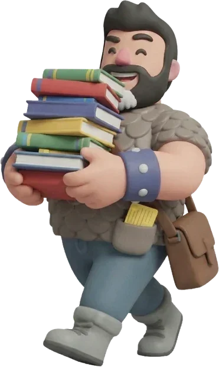
Lección
Una infografía y un texto que se puede escuchar en voz alta, con la palabra iluminada y la velocidad regulable.
La app que acompaña a tu hijo o hija en 4.º de Primaria: el currículo oficial explicado con infografías y voz, un seguimiento claro para la familia y un mundo de plastilina que premia el esfuerzo. Sin anuncios y pensada para que cada niño aprenda a su ritmo.
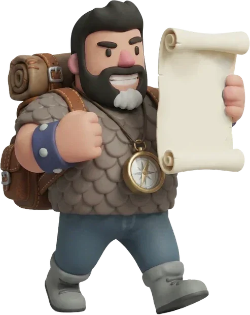
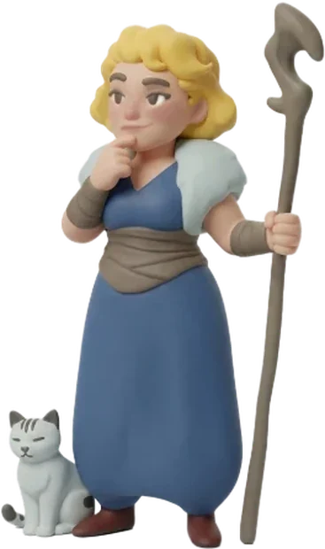
Rumbo al Saber no sustituye al colegio ni a la familia: os da una herramienta para acompañar el estudio de cada día, con el mismo temario que se da en clase.
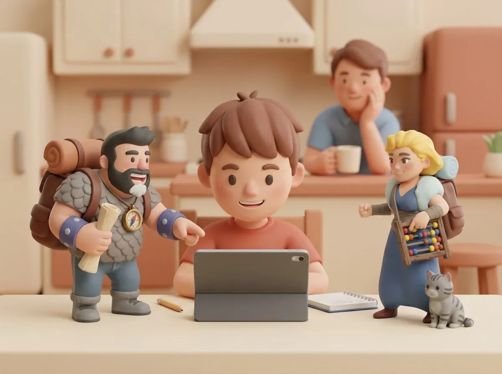
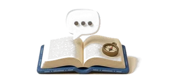
Cada unidad explica antes de preguntar: infografía, texto y una voz que lo lee en voz alta. Puede repasar sin que un adulto tenga que volver a explicárselo todo.
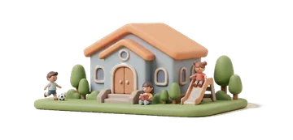
Desde el modo tutor marcáis el tema que se está dando en clase («Ahora en clase») y la app abre esa lección en el mapa para repasarla esa misma semana.
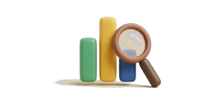
Nota del 1 al 10, las unidades y las preguntas que más le cuestan y las lecciones dejadas a medias, que pueden ser una señal de frustración.
Monedas que se ganan con esfuerzo y se canjean por premios que pactáis en casa. Aprende a gestionar, a ahorrar y a saber esperar.
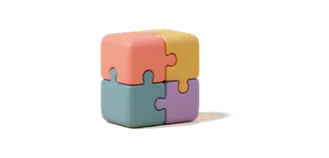
Letra más grande o «escrita a mano», más espacio para leer, ejercicios sin reloj y pantalla sin movimiento: ajustes pensados para la dislexia, el TDAH o el autismo, guardados para cada perfil.
Sin anuncios, sin chats ni desconocidos y sin recoger datos personales. El progreso se queda en el dispositivo de la familia.
Cada unidad tiene tres pasos. Los tutores acompañan cada uno con su voz y sus gestos, y el progreso queda guardado en el perfil de cada niño.

Una infografía y un texto que se puede escuchar en voz alta, con la palabra iluminada y la velocidad regulable.
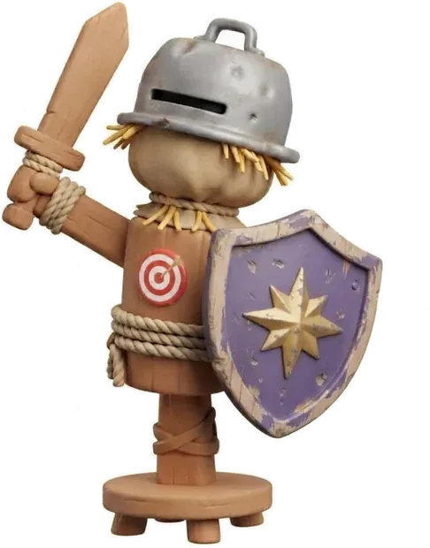
Con pistas de las mascotas y sin presión. Una voz le felicita por su nombre cuando acierta y, si falla, le dice «espera, vamos a repasarlo» y le lee la explicación.
Es lo que puntúa. Antes de empezar, un repaso con la infografía y su texto, que se puede escuchar; durante las preguntas el texto desaparece (salvo en las lecturas de comprensión): así sabemos qué se ha entendido de verdad.
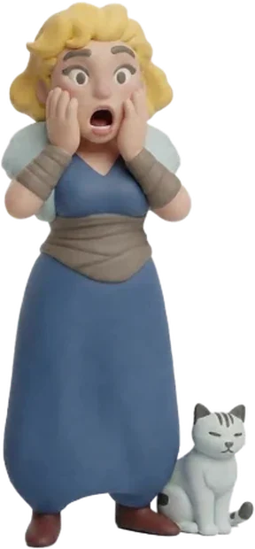
Las preguntas falladas vuelven al final en una repesca. La nota se calcula con la primera respuesta: la repesca sirve para entender, no para maquillar el resultado.
Cada unidad sigue los saberes básicos del currículo oficial de la LOMLOE para 4.º de Primaria, el segundo curso del segundo ciclo, y se agrupa en los mismos bloques que marca la normativa, para que cualquier maestro reconozca dónde encaja cada cosa. Esta primera versión se ha contrastado, saber por saber, con el currículo de las Illes Balears; las adaptaciones a los currículos de otras comunidades llegarán más adelante.
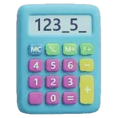
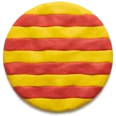
14 unidades · 101 páginas · 367 preguntas
13 unidades · 84 páginas · 306 preguntas
9 unidades · 59 páginas · 223 preguntas
El contenido va en castellano en los dos idiomas de la app, porque es la lengua de estudio.
8 unidades · 43 páginas · 173 preguntas
La explicación va en castellano o catalán; todo lo que es inglés sale en un recuadro que se lee con voz inglesa. Preguntas de escuchar, de escribir y de ordenar frases.
Las lecciones terminadas se guardan en el diario para volver a leerlas sin pruebas: la infografía, el texto y la voz. Con el buscador se encuentra cualquier palabra clave en un momento. También están las tablas de multiplicar para repasarlas, las criaturas que ha vencido y, en otra pestaña, los resultados para el tutor.
En las lecciones, las palabras clave aparecen subrayadas. Si el alumno toca una, una mascota le explica qué significa, con sinónimos, antónimos y la sílaba tónica. Es gratis: la mascota no se cansa, y la palabra queda guardada en el diario para repasarla cuando quiera.
En Matemáticas, el alumno elige qué quiere practicar (sumas, restas, multiplicaciones y divisiones, desde una cifra hasta números grandes) y la app le prepara cinco cuentas de cada tipo, con números nuevos cada vez y la corrección al terminar; la división se explica paso a paso. Es entrenamiento, como los minijuegos: no da monedas, y los resultados quedan para el tutor, desglosados por operación. Y en todas las preguntas de Matemáticas tiene un espacio para hacer la cuenta en vertical; si la pregunta es una operación, la cuenta ya sale puesta y su resultado es la respuesta. Todo sin conexión.
Para una familia o un docente, saber cómo avanza el alumno es tan importante como la propia app. Los resultados están en el Diario y muestran, con datos claros, dónde va bien y dónde necesita ayuda.
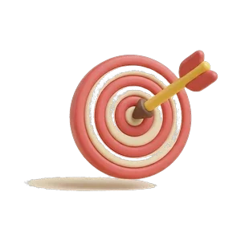
Nota del 1 al 10Solo cuentan los retos y la primera respuesta: la repesca sirve para aprender.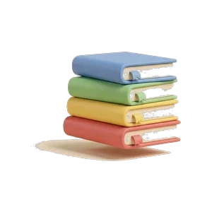
Por asignatura y bloqueErrores a la primera, corregidos y dejados a medias, bloque a bloque.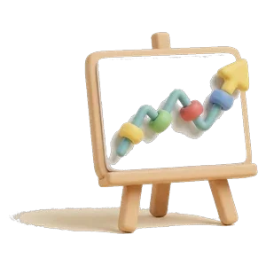
EvoluciónLa nota de los últimos retos en una gráfica.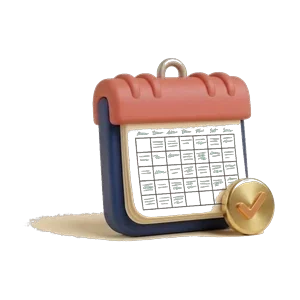
Actividad diariaLos últimos 14 días: qué ha hecho y qué ha dejado a medias.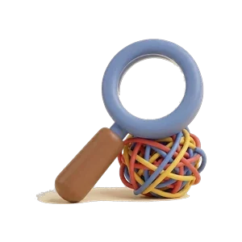
Unidades y preguntas difícilesCon el porcentaje de errores y las veces que ha fallado cada pregunta.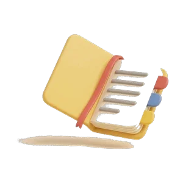
Palabras consultadasEl vocabulario que ha necesitado consultar en las lecciones.Qué significa: la práctica diaria funciona y el alumno gana confianza.
Qué hacer: reconocer el esfuerzo, mantener la rutina y pactar un premio del monedero.
Qué significa: es una dificultad concreta, no general: el resto de materias van bien.
Qué hacer: repasar juntos la lección en el Diario, con la infografía y la voz, y volver a hacer el entrenamiento.
Qué significa: puede ser una señal de frustración. La app lo avisa en rojo.
Qué hacer: sentarse con él, hacer la lección juntos y quitar presión. Si se repite, comentarlo con el tutor del colegio.
Rumbo al Saber es una plataforma: la app es la misma y cada curso es un paquete nuevo que se añade dentro. Así crece con tu hijo, curso tras curso, sin tener que cambiar de herramienta.
Conocimiento del Medio, Matemáticas, Lengua Castellana e Inglés, con 44 unidades. La app es gratuita y se puede probar con la demo.
Cada año se incorpora un curso más, con su temario, sus personajes y un aspecto adaptado a la edad. Cada curso completo se añade desde la propia app.
Al cambiar de curso se conservan las monedas y todo el historial: las notas y los logros de cada curso, y una gráfica que compara la evolución de un año a otro.
El mismo temario, tres caminos para recorrerlo. Cada niño elige el que más le motiva, y puede cambiarlo cuando quiera sin perder el avance realizado.
Eliges la asignatura y el bloque, y avanzas unidad a unidad: lección, entrenamiento y reto, en orden. Es la manera ideal de seguir el temario del colegio semana a semana, y cada unidad incluye un minijuego para practicar jugando.
Un recorrido que va alternando asignaturas. Cada parada tiene tres pasos: primero se explica la lección, después se repasa y al final llega el reto. Al terminar, el camino abre una lección nueva de otra asignatura, y así cada sesión es variada y dinámica.
En el modo Aventurero cada unidad es una casilla del camino, con rutas distintas llenas de objetivos, desafíos, recompensas y peligros. Branquianegra acecha en los caminos, dispuesto a quedarse con parte de tu botín si no superas su reto. Pero también encontrarás amigos, como Rufus el mago, que te dará cobijo, te regalará un día de racha y te desafiará con adivinanzas: si la aciertas, te llevas un vale de racha. Al final del camino te espera el jefe final, que pondrá a prueba todo lo aprendido. Si lo derrotas, ganarás un gran tesoro: oro, un vale de racha y una nueva mascota.
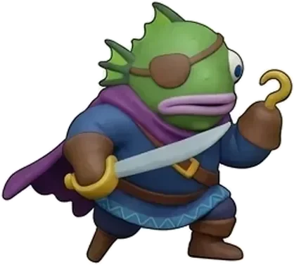
BranquianegraTe reta en el camino y, si fallas, se lleva parte de tu oro.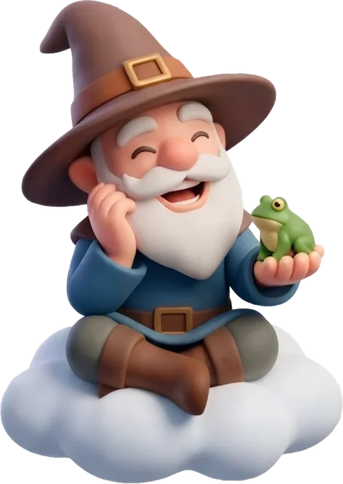
El refugio de RufusCobijo, un día de racha y un vale si aciertas la adivinanza.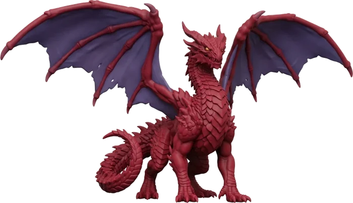
El dragón rojoEl jefe final y el reto más difícil: preguntas de todo el trimestre y sin mascotas.Cada lección se abre con una infografía que resume la idea clave en una imagen. Se han elaborado buscando una armonía estética que dé personalidad propia al proyecto y facilite el entendimiento de la lección. Están en catalán y en castellano (las de inglés, con los rótulos en inglés), y usan ejemplos cercanos y lugares reales.
El niño elige quién le representa dentro del mundo de Fantasía, con 30 héroes. Van apareciendo nuevos a medida que sube de nivel.
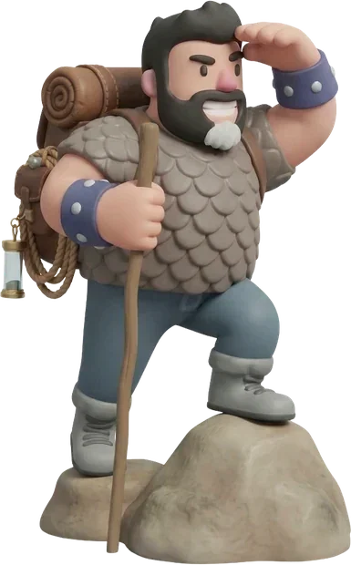
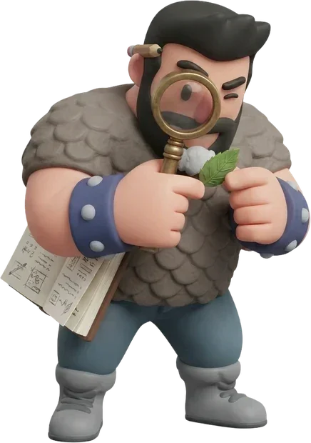
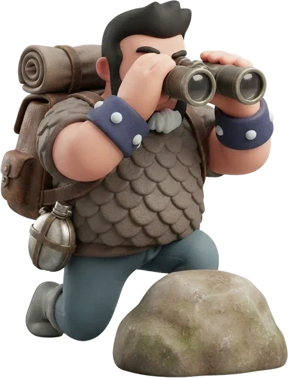
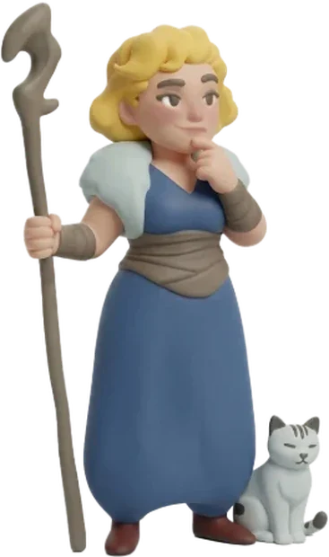
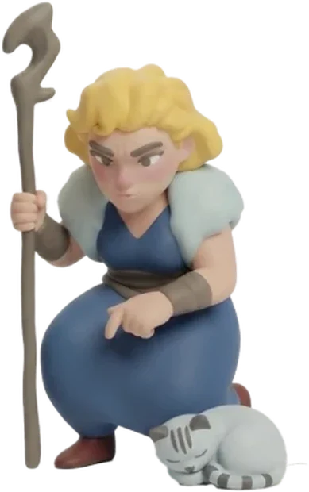
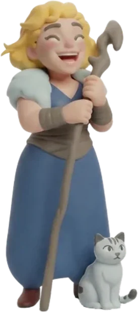
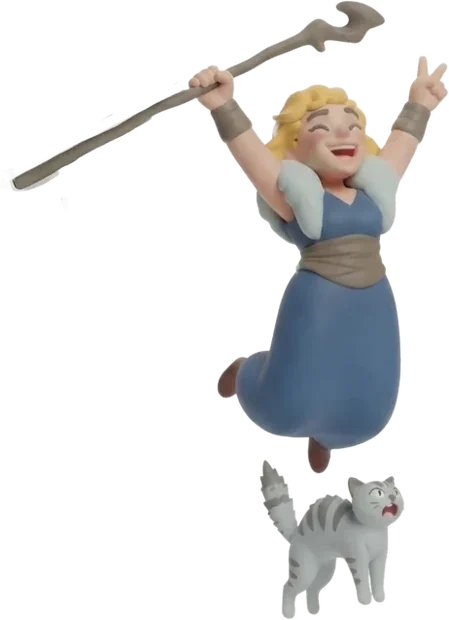
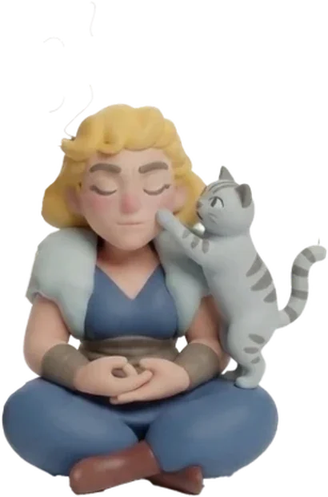
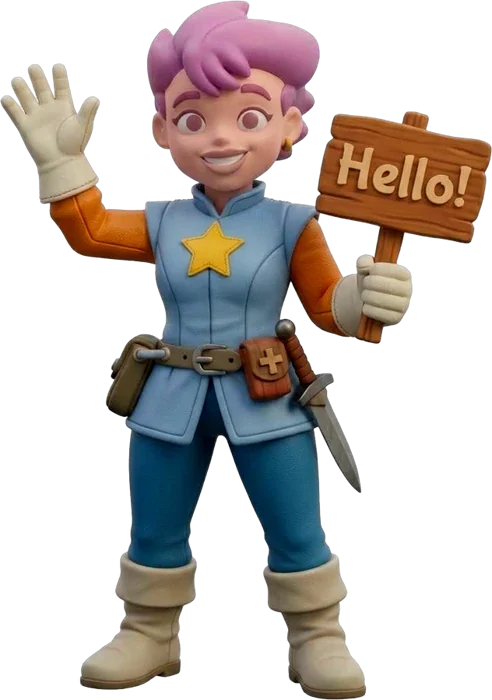
Martala maestra de inglés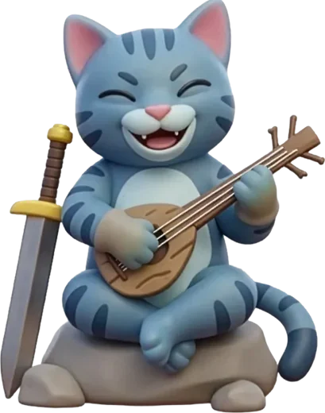
Lokiel bardoCada mascota sabe de una, dos o tres asignaturas según lo rara que sea: común (una), rara (dos) o épica (tres). Cuando una pregunta se atasca, tocas a la mascota que sabe del tema y te da una pista. Pruébalo: solo te ayudará la que sabe.
Ayudan en la lección, el repaso, el reto y los jefes de tramo, siempre en su materia. Solo en el jefe final vas solo.
Después de dar una pista en una prueba se pone gris. Se despierta gastando un día de racha o pasando por el refugio de Rufus.
Más de sesenta mascotas que se van desbloqueando nivel a nivel hasta el final del curso. Se empieza con una y, subiendo de nivel, se pueden llevar hasta cuatro a la vez.
Las monedas de oro se acumulan en un monedero. Se ganan en la app y también en casa: la familia puede darlas por las tareas y las rutinas. Y pueden canjearse por recompensas que se pactan en casa.
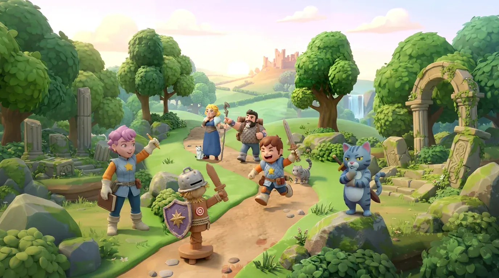
Bosques, castillos y caminos que se van abriendo a medida que aprende, con sus héroes y sus mascotas.
Funciona sin internet, en el ordenador, la tableta o el móvil.
La misma app se adapta a cada pantalla. En la tableta y el ordenador aprovecha el espacio: más personajes a la vista, láminas más grandes y el mapa de aventura a lo ancho.
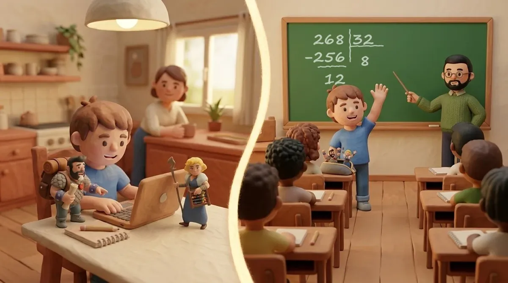
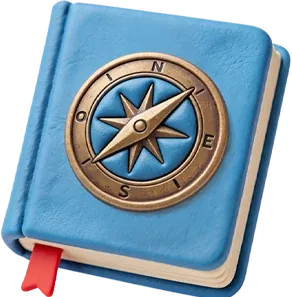
Una vez instalada, funciona sin conexión y sin cuentas. Los datos se quedan en el dispositivo.
Cada uno con su progreso, su personaje, sus mascotas y su monedero.
Dispone de una versión bilingüe en castellano y catalán, con voces que leen las lecciones mientras las palabras se iluminan. El inglés, con voz inglesa.
No solo con un resultado numérico: las Notas muestran las unidades con más errores, las preguntas que más le cuestan y cada lección que ha dejado a medias o ha cerrado sin terminar. Si se repite en la misma unidad, la app avisa: puede ser una señal de frustración.
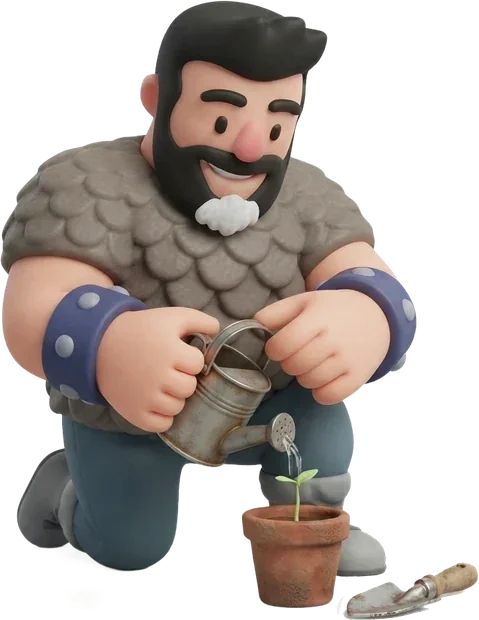
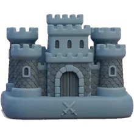
La familia pone los premios de casa, da monedas por las tareas y puede cambiar ilustraciones y audios.
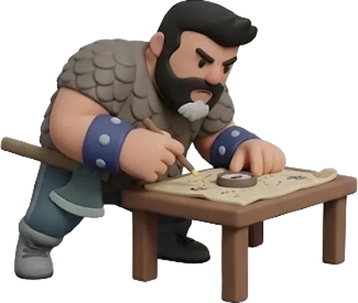
Rumbo al Saber nació de algo muy sencillo: un padre que quería ponerle las cosas más fáciles a su hijo a la hora de estudiar. Buscando la manera de hacerlo, acabó creando una app a su medida, con personajes, monedas y aventuras en lugar de listas y deberes.
Con el tiempo, el proyecto ha crecido con una idea más amplia: acompañar a cualquier alumno, y sobre todo a quienes encuentran más obstáculos para aprender, como los niños con dislexia, TDAH o autismo. Por eso la app lee en voz alta, ilumina cada palabra, deja regular la velocidad y el tamaño de la letra, y propone una práctica sin presión donde equivocarse forma parte del camino.
Aprender jugando es la manera más natural y motivadora de aprender.
Andrés Sáez Martínez
Creador de Rumbo al SaberLicenciado en Bellas Artes por la Universitat Politècnica de València (2005), cuenta con 19 años de experiencia como diseñador gráfico y 10 como ilustrador profesional.
hola@rumboalsaber.appEstos son los próximos pasos que nos gustaría dar para llegar a más alumnos y hacerlo mejor.
Como plan de futuro, nos gustaría contar con asesoría neurológica para mejorar los contenidos, los ritmos y la forma de interactuar de la app, y adaptarla mejor a los niños con dislexia, TDAH o autismo.
El tercer trimestre de inglés con Marta y las lenguas cooficiales para las comunidades que las estudian, empezando por el catalán.
El año que viene sumaremos 5.º de Primaria, con todo su temario, para que el aprendizaje continúe de un curso al siguiente.